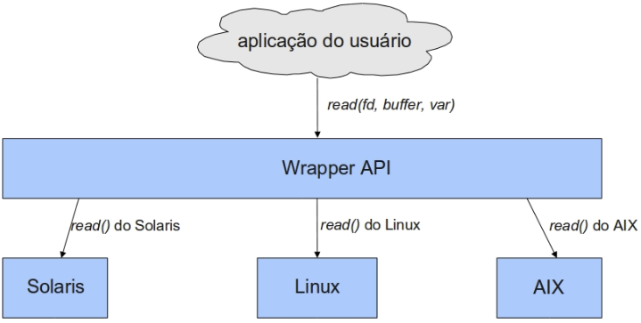
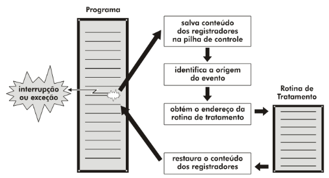
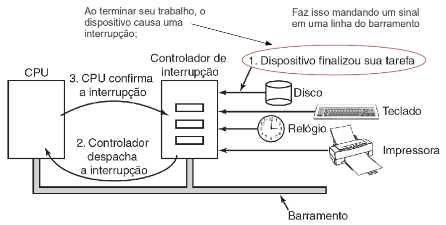
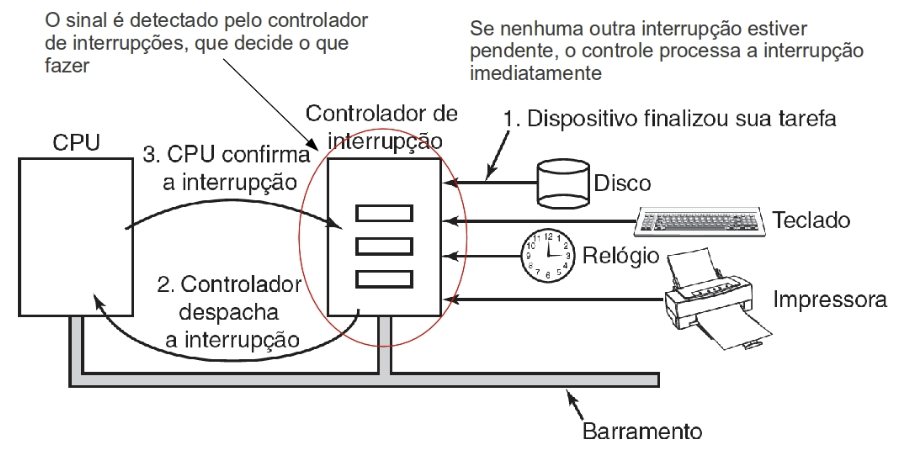
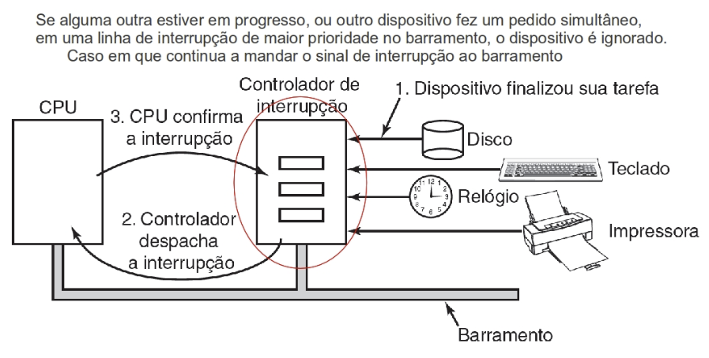
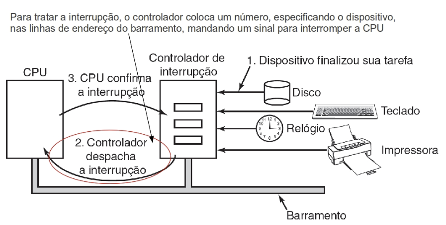
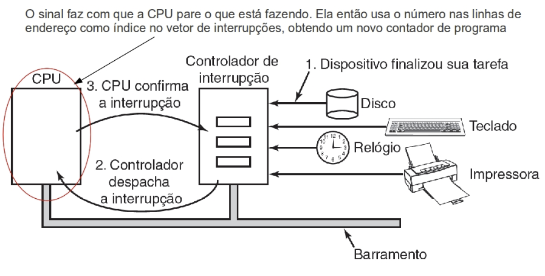
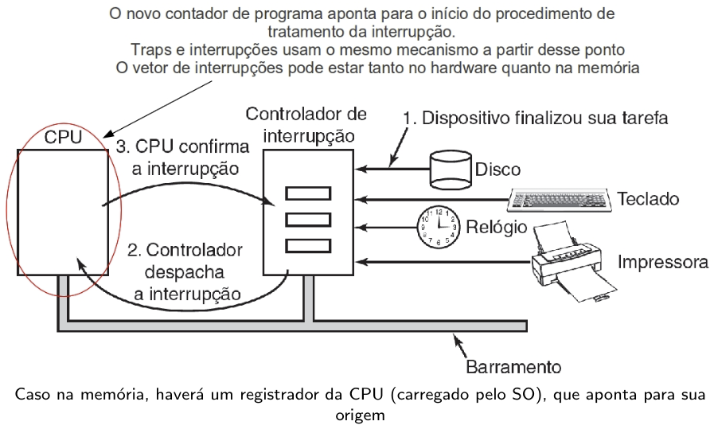

Disciplinas
-
SISTEMAS COMPUTACIONAIS. Concluído
Materiais
Vídeo 1 - Sistemas Operacionais – Aula 03 - Chamada de Sistema e Interrupção. sendProf° ministrante: Jó Ueyama (UNIVESP).
Conteúdo
Chamada de Sistema e Interrupção.
Chamadas de Sistemas.
- Se uma aplicação precisa realizar alguma instrução privilegiada (imprimir um arquivo),
- ela realiza uma chamada de sistema, que altera do modo usuário para o modo kernel;
- Ex: Ler um arquivo
- Chamadas de sistemas são a porta de entrada para o modo kernel;
Como elas são realizadas?
- 1) As chamadas de sistemas são realizadas através de instruções Traps.
- 2) Traps são conhecidos como interrupções de software.
- 3) Após o término da chamada (ex.: ler um arquivo), a execução continua após a chamada de sistema
- (a) Aplicativo faz chamada ao sistema (Trap).
- (b) Através de uma tabela, o SO determina o endereço da rotina.
- (c) Rotina de Serviço é acionada (rotina compartilhada).
- (d) Serviço solicitado é executado e o controle retorna ao aplicativo.
Interfaces das SysCalls.
- 1) Interface para esconder a complexidade das syscalls.
- 2) Interface de programação fornecida pelo SO.
- 3) Geralmente escrita em linguagem de alto nível (C, C++ ou Java).
- 4) Normalmente as aplicações utilizam uma Application Program Interface (API).
- 5) Interface que encapsula o acesso direto às chamadas ao sistema.
Interface das Chamadas de Sistema (Wrappers) mais utilizadas:
- 1) Win32 API para Windows
- 2) POSIX API para praticamente todas as versões de UNIX
- 3) Java API para a Java Virtual Machine (JVM)
Motivos para utilizar APIs em vez das chamadas ao sistema diretamente:
- 1) Portabilidade -- independência da plataforma
- 2) Esconder complexidade inerente às chamadas ao sistema
- 3) Acréscimo de funcionalidades que otimizam o desempenho
Portabilidade usando Wrappers.
Exemplo de Uso com printf().
- Programa em C que invoca a função de biblioteca printf(), que por sua vez chama o system call write()
- A chamada printf() ocasiona a chamada write() e exit()
Interrupções.
Vimos que um software pode interromper seu próprio processo (ao fazer uma chamada ao sistema):- 1) Usando traps (Interrupções de software ou Exceções).
- 2) Para isso, a aplicação tem que estar rodando.
- 1) Interrupções de hardware (eventos externos).
- 2) Um sinal elétrico no hardware.
- 3) Causa: dispositivos de E/S ou o clock.
Passos para tratar a interrupção:
Interrupção vs. Traps.
- Interrupção
- Evento externo ao processador.
- Gerada por dispositivos que precisam da atenção do SO. Pode não estar relacionada ao processo que está rodando.
- Traps
- Evento inesperado vindo de dentro do processador. Causados pelo processo corrente no processador (seja por chamada ao SO, seja por instrução ilegal).
Exemplos de uma interrupção.
     Bibliografia:
- Sistemas Operacionais Modernos; Tanenbaum, A. S 4ª Edição.